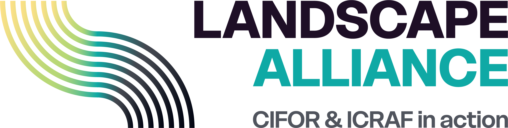
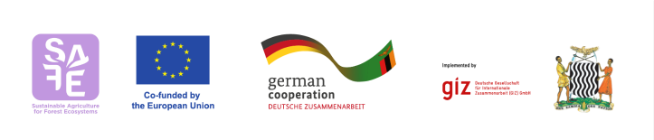

Community Forest Management in Zambia: Is It Working?
Final Report
Foreword
[Foreword text to be inserted]
Acknowledgements


This activity is a partnership between Landscape Alliance and the SAFE (Sustainable Agriculture for Forest Ecosystems) project, financed by the European Union (EU), the Ministry of Foreign Affairs of Netherlands and the German Federal Ministry for Economic Cooperation and Development (BMZ). SAFE is part of the Fund for the Promotion of Innovation in Agriculture (i4Ag) and implemented by Deutsche Gesellschaft für Internationale Zusammenarbeit (GIZ). The aim of this collaboration is to understand whether community forestry in Zambia is delivering the desired outcomes in terms of sustainable forest management and rural economic development.
The activity is also a collaboration between Landscape Alliance and the Government of the Republic of Zambia through the Ministry of Green Economy and Environment and the Department of Forestry.
The authors would like to thank the District Forest Officers, CFMG Executives and traditional leadership from the surveyed communities for helping to coordinated the survey. We would also like to thank the Focal Group Discussion members and individual interviewees for giving up their time and contributing to the success of the survey. The authors would further like to acknowledge Sam Harrison and Casey Ryan, both from the University of Edinburgh, UK, for generously contributing the forest biomass data that were used in the remote sensing chapter. The team would like to thank the colleagues at the Landscape Alliance for their logistic and administrative support, especially Miambo Malesu (Country Co-ordinator, Zambia) who was responsible for all the managerial roles in supporting the team. We would like to thank the participants at the inception workshop, who contributed their expertise and advise freely and greatly improved the design of the study, as result. Last, we would like to thank Alastair Anton (ZIFLP), Anne Larson (Landscape Alliance) and colleagues from GIZ, the EU delegation in Zambia, and the Landscape Alliance for reviewing and commenting on draft versions of the report.
The contents of this report are the sole responsibility of the authors and the Landscape Alliance do not necessarily reflect the views of the EU, the Federal Ministry for Economic Cooperation and Development (BMZ), the Ministry of Foreign Affairs of the Netherlands, or the Government of the Republic of Zambia.
Suggested Citation
Harrison, R. D., Chisonga, C., Banda, E., Masuku, T., Moombe, K., Mambwe, H., and Chama, H. (2026). Community forest management in Zambia: Is it working? Landscape Alliance, Lusaka, Zambia.
Contents
| Chapter | Title |
|---|---|
| Summary | Summary of findings and headline conclusions |
| Recommendations | Recommendations for government, NGOs and carbon developers |
| Introduction | Background, policy context and study objectives |
| Survey Overview | Survey design and sample characteristics |
| Governance | Analysis of survey data on CFMG legal, governance and business processes |
| Sustainable Forest Management | Analysis of survey data on forest condition and SFM outcomes |
| Remote Sensing Analysis | Analysis of Earth observation evidence on fire, deforestation and biomass change |
| Economic Transformation | Analysis of survey data on employment, income, carbon finance and forest enterprises |
| Equity and Inclusion | Analysis of survey data on benefit sharing, gender equity and poverty impacts |
| Discussion | Synthesis of study results and cross-cutting findings |
| Appendix I – Methods | Detailed account of analysis methods |
| Appendix II – Survey tool | Survey instrument |
| Appendix III – List of CFAs surveyed | Summary details of all community forests in the sample |
| Appendix IV – CFMG performance index scores | Governance, SFM, economic and equity index scores for each CFMG surveyed |
Abbreviations
| Abbreviation | Definition |
|---|---|
| BCP | BioCarbon Partners |
| BMZ | German Federal Ministry for Economic Cooperation and Development |
| CFA | Community Forest Area |
| CFM | Community Forest Management |
| CFMG | Community Forest Management Group |
| CLMM | Cumulative Link Mixed Model |
| COMACO | Community Markets for Conservation |
| CRB | Community Resource Board |
| DFO | District Forestry Officer |
| EU | European Union |
| FAO | Food and Agriculture Organization of the United Nations |
| FD | Forestry Department |
| FGD | Focus Group Discussion |
| FPIC | Free, Prior and Informed Consent |
| GIZ | Deutsche Gesellschaft für Internationale Zusammenarbeit |
| GLMM | Generalised Linear Mixed Model |
| GRZ | Government of the Republic of Zambia |
| HFO | Honorary Forest Officer |
| i4Ag | Fund for the Promotion of Innovation in Agriculture |
| JFM | Joint Forest Management |
| MoA | Ministry of Agriculture |
| MoGEE | Ministry of Green Economy and Environment |
| NDC | Nationally Determined Contribution |
| NGO | Non-governmental Organisation |
| NTFP | Non-timber Forest Product |
| PACRA | Patents and Companies Registration Agency |
| REDD+ | Reducing Emissions from Deforestation and forest Degradation |
| SAFE | Sustainable Agriculture for Forest Ecosystems |
| SFM | Sustainable Forest Management |
| SI | Statutory Instrument |
| ZIFLP | Zambia Integrated Forest Landscape Programme |